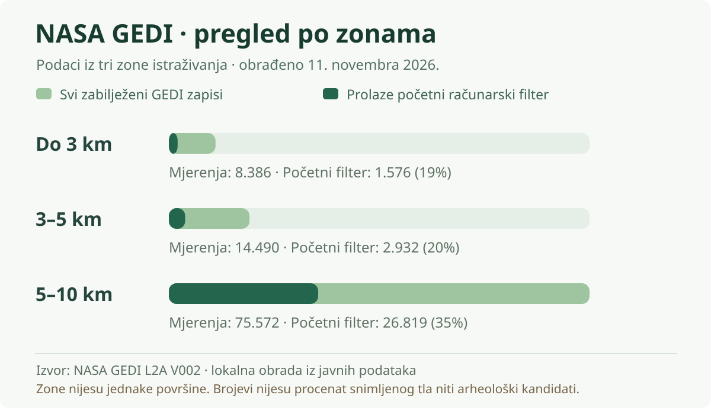
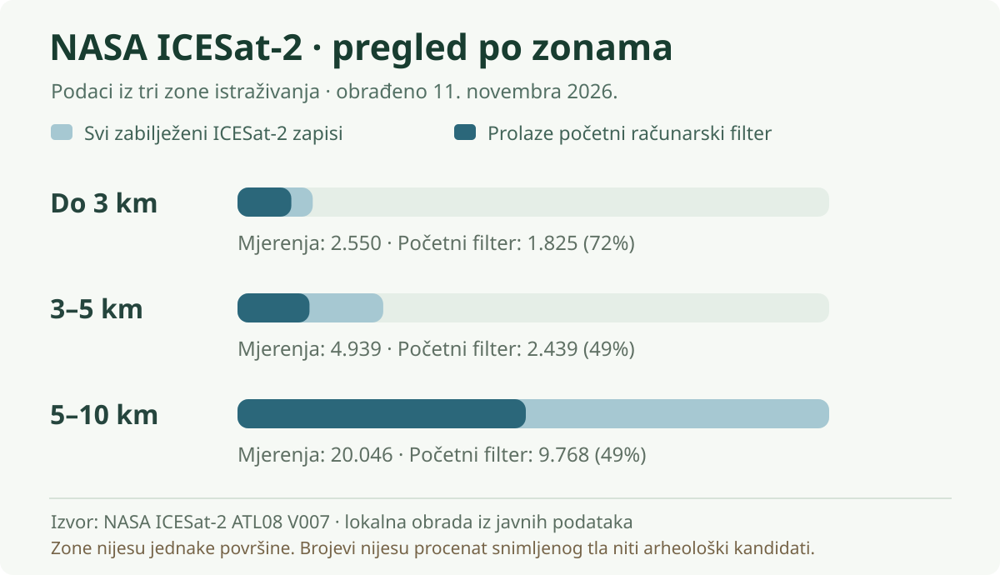

DOKAZI / LASER / SATELITI
Šta podaci stvarno pokazuju?
Sve što smo do sada mogli provjeriti računarskom analizom — bez izmišljenih otkrića.
ORIGINALNA MJERENJA
Laserski podaci koje možeš sam da pogledaš
Dodirni ili klikni mapu za uvećanje. U otvorenom prikazu možeš zumirati i pomjerati sliku.
GEDI i ICESat-2 mjere duž putanja satelita. Ove karte pokazuju gdje su podaci dostupni; nijesu neprekidan trodimenzionalni sken zemljišta.

NASA GEDI — gdje je laser mjerio?
Stvarne tačke duž putanja. Praznine između njih nijesu detaljno snimljene ovim mjerenjima.
Uvećaj i istraži sliku
NASA ICESat-2 — drugi pogled
Stvarni zapisi duž drugih putanja. Ovo su segmenti mjerenja, ne fotografije arheoloških objekata.
Uvećaj i istraži slikuLaserski podaci, upoređeni po zonama
Ovi dodatni grafikoni napravljeni su iz stvarnih zbirnih rezultata. Prikazuju broj zapisa i koliko ih prolazi početnu računarsku provjeru — nijesu fotografije, neprekidne laserske površine ili potvrđena nalazišta.


NASA GEDI · pregled po zonama
Ukupni zapisi i početna AI provjera kvaliteta po zonama. Različite zone nemaju jednaku površinu i grafici dviju misija nijesu međusobno ista mjerna jedinica.
Izvor: NASA GEDI L2A V002 · lokalna obrada iz javnih podataka
Uvećaj grafikon ↗

NASA ICESat-2 · pregled po zonama
Ukupni zapisi i početna AI provjera kvaliteta po zonama. Različite zone nemaju jednaku površinu i grafici dviju misija nijesu međusobno ista mjerna jedinica.
Izvor: NASA ICESat-2 ATL08 V007 · lokalna obrada iz javnih podataka
Uvećaj grafikon ↗POGLEDAJ PA ZABILJEŽI
Tvoja opažanja
Uporedi raspored mjerenja i zapiši šta te zanima. Bilješke se čuvaju samo na ovom uređaju i ne šalju se nama niti istraživačkom agentu.
REZULTATI I OGRANIČENJA
Šta je analiza zaista pokazala?
AI je analizirao stvarne laserske visine i grube modele reljefa. Dva izdvojena manja primjera dodatno su provjeravana; savremeni i prirodni uzroci ostaju mogući. To ne znači da arheologije nema.

Koliko metoda mijenja rezultat?
Isti podaci daju između 55 i 1.305 izdvojenih površinskih obrazaca pri devet postavki. To nijesu arheološka nalazišta.
Uvećaj i istraži slikuDirektna provjera laserskih visina
U dodatnoj analizi izdvojen je 341 niz promjena visine duž putanja — ne 341 različito mjesto. Nijedan nije potkrijepljen dokazima za arheološko porijeklo.
Zašto je to važno?
Drveće, putevi, industrija i prirodni nagibi stvaraju slične oblike. Dostupni podaci nijesu dovoljno gusti za pouzdano prepoznavanje malih zidova ili humki.
Kako provjeravamo ovakve tragove ↗Otvori broj mjerenja po zonama
Različite vrste laserskih zapisa ne predstavljaju isto; brojevi nijesu procenat terena koji je snimljen.
| Zona | GEDI tačke | ICESat-2 zapisi | Tipična visina u NASADEM |
|---|---|---|---|
| 0–3 km | 8.386 | 2.550 | 26,2 m |
| 3–5 km | 14.490 | 4.939 | 38,3 m |
| 5–10 km | 75.572 | 20.046 | 50,6 m |
DRUGI JAVNI IZVORI
Kako se predio mijenjao?
Ove karte daju kontekst laserskim mjerenjima. Same ne otkrivaju ni arheologiju ni zagađenje.

Zelenilo na pet jesenjih snimaka
Stvarni satelitski podaci iz 2021, 2023, 2024, 2025. i 2026. Razlike ne potvrđuju dugoročni trend.
Copernicus Sentinel-2 · Izmijenjeni podaci, obrada AI agenata.
Uvećaj i istraži sliku
Šta je prekrivalo tlo 2021?
Automatska karta pokrivača zemljišta. Može pogriješiti i nije katastar niti današnje stanje.
Uvećaj i istraži sliku
Istorija površinskih voda
Učestalost satelitski zabilježene površinske vode 1984–2024. Nije analiza podzemne vode ili njenog hemijskog sastava.
Uvećaj i istraži sliku
Oblik šireg terena
NASADEM prikazuje regionalne visine približne rezolucije 30 m, ne direktne snimke zidova.
Uvećaj i istraži slikuDOKUMENTOVANO RANIJE
Mjesta koja se već pominju u izvorima
Šest unosa iz opštinskog planskog dokumenta, strana 174. Nijedan nije novo otkriće ovog projekta. Opštinski popis ne potvrđuje precizne granice, starost ni status pravne zaštite.
Prikaži svih šest navoda
- Crkva Sv. Petke, GrbavciSZ NPSJ 2017.
- Lokalitet Lekići - stara crkva, GrbavciInicijativa
- Lokalitet Divangrad, GrbavciInicijativa
- Buac (staro groblje, nadgrobne ploče), GrbavciInicijativa
- Crkva sv. Nikole, Gornji KokotiStručna saznanja
- Crkva sv. Nikole, Donji KokotiStručna saznanja
Pogledaj javne bilješke i status svih izvora
Obrađeni skupovi podataka
Učitavanje podataka…
Tok istraživanja
Učitavanje podataka…
Ažuriranja su evidencija AI rada, ne ljudska stručna potvrda.